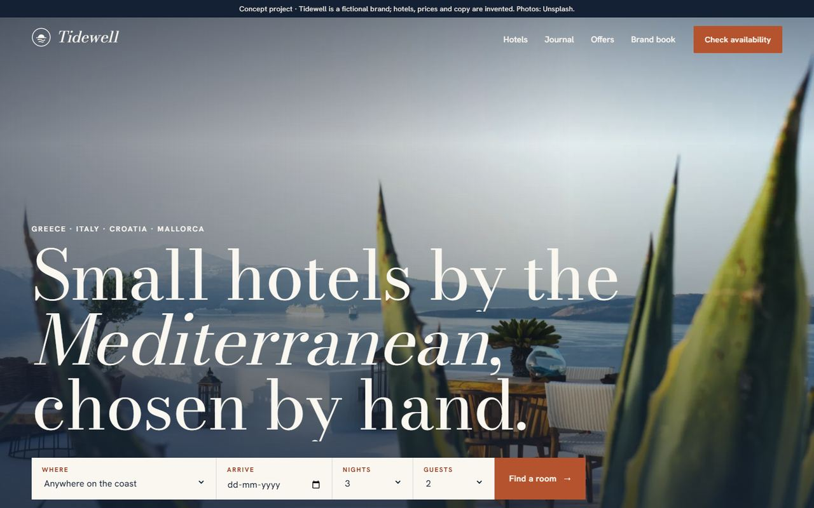

Tidewell: small hotels by the Mediterranean
A boutique-hotel brand and booking site I designed and built from scratch: home page, a filterable collection of eight hotels, a page for each hotel with rooms and rates, journal stories, an offer page, a brand book (logo, type, colour, voice) and a campaign kit with an email template and social and display ads. Scroll-driven motion with GSAP, static pages built with Astro and hosted on GitHub Pages.
Concept project: Tidewell is a fictional brand; hotels, prices and copy are invented. Photos: Unsplash. Fonts: Bodoni Moda and Hanken Grotesk (SIL OFL).